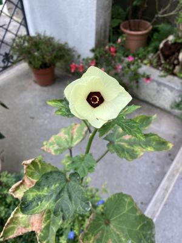

うるがいの話 ある日
最新: アパートの騒音【うるがいの話 ある日】とは 一日だけのプログです
『うるがいの話』の最新一日だけのプログで、通信料が少なく経済的だ。カニの画像をクリックすると全ての日付が載る『うるがいの話』サイトを表示します
|
|
【うるがいの話】 うるがい(ｳﾙｶﾞｲ urugai)とは、『もずくがに』の名前でとても大きくなります。 |
|---|---|
|
|
【カミマヤーの話】 猫のことを方言でマヤーといいます。カミマヤー（kamimayaa）とは、神の猫のことです。 |
|
【たながぁの音楽】 たながぁ（ﾀﾅｶﾞｰ tanagaa）とは手長えびのことで、何種類かあり大きいのは車 エビぐらいになります。 |

|
【ぶながぁの話】 ぶながぁ(ﾌﾞﾅｶﾞｰ bunagaa)とは、赤い髪の毛、赤い身体、そして身長は１ｍ２０ｃｍ ぐらい、川の蟹を食べているの目撃された。場所は沖縄県国頭郡大宜味村のと ある村僕の隣近所に住んでいる爺さんから、聞いた話です。 |
|
|
【ギーマの話】 ギーマ(giima)とは、山原の里山に咲くスズランに似た、 花を付けます。実は食べられます、 気が付くと口の周りが紫になっています。 |
2023年12月14日 (木）アパートの騒音
15:15
掃除機の音がうるさくて、眠れないとコドモが、アパートの隣人で困っている
管理会社へ相談を持ち掛けているが、ラチがあかない。手紙を投函するかと言
う。それは、止めたほうがいい、ニュースであるような隣人との殺傷事件にな
るかも。あくまでも、管理会社へちゃんと隣人へ、騒音の話をこの時間帯は避
けてと具体的にいって、相手にも話が伝わるまで、管理会社の責任としたら。
数時間後、コドモが一件落着！、管理会社から隣人の還暦を越えたたであろう
夫婦に騒音苦情が伝わったと、『ヘー掃除機でうるさかったとは』と言ってい
たらしい。ということは、管理者がチャント話をつけていなかったことが分か
る。

大学生のころ、アパートの若い女性二人が隣の部屋に住んで居た。そこにくる
ハングレの男性に、私が殴られる（警察に姉が報告する）出来事があり、大家
からその女性二人に、アパートを出てもらった体験談を、コドモに話す。
暑い、長袖を脱ぎ半袖になる。
１５時０８分 ビットコインの総資産 ￥１７、５９９（↑３１５）